<!DOCTYPE html>
<html lang="ja">
    <head>
        <meta charset="utf-8">
        <meta http-equiv="X-UA-Compatible" content="IE=edge">
        <meta name="viewport" content="width=device-width, initial-scale=1.0">
        <meta name="author" content="Shuto" />

        <meta property="og:type" content="article" />
        <meta name="twitter:card" content="summary">

<meta name="keywords" content="3S, 分子進化学, 分子進化学, " />
<meta property="og:image" content="https://1.bp.blogspot.com/-bU_3kgyrDp4/VkLHVEHswnI/AAAAAAAA0VI/hW-viHFn-74/s400/school_test_seifuku_boy.png"/>

<meta property="og:title" content="分子進化学 課題回答 "/>
<meta property="og:url" content="https://iwasakishuto.github.io/study/notes/分子進化学-kadai-ans.html" />
<meta property="og:description" content="期末テスト" />
<meta property="og:site_name" content="My Notes" />
<meta property="og:article:author" content="Shuto" />
<meta property="og:article:published_time" content="2019-07-17T00:00:00+09:00" />
<meta property="og:article:modified_time" content="2019-07-17T00:00:00+09:00" />
<meta name="twitter:title" content="分子進化学 課題回答 ">
<meta name="twitter:description" content="期末テスト">

        <title>分子進化学 課題回答  · My Notes
</title>
        <link href="//netdna.bootstrapcdn.com/twitter-bootstrap/2.3.2/css/bootstrap-combined.min.css" rel="stylesheet">
        <link href="//netdna.bootstrapcdn.com/font-awesome/4.7.0/css/font-awesome.css" rel="stylesheet">
        <link rel="stylesheet" type="text/css" href="https://iwasakishuto.github.io/study/notes/theme/css/pygments.css" media="screen">
        <link rel="stylesheet" type="text/css" href="https://iwasakishuto.github.io/study/notes/theme/tipuesearch/tipuesearch.css" media="screen">
        <link rel="stylesheet" type="text/css" href="https://iwasakishuto.github.io/study/notes/theme/css/elegant.css" media="screen">
        <link rel="stylesheet" type="text/css" href="https://iwasakishuto.github.io/study/notes/theme/css/admonition.css" media="screen">


        <!-- Use fontawesome Icon -->
        <link rel="stylesheet" href="https://use.fontawesome.com/releases/v5.7.0/css/all.css" integrity="sha384-lZN37f5QGtY3VHgisS14W3ExzMWZxybE1SJSEsQp9S+oqd12jhcu+A56Ebc1zFSJ" crossorigin="anonymous">
        <!-- Syntax highlight -->
        <link rel="stylesheet" href="https://cdnjs.cloudflare.com/ajax/libs/highlight.js/8.6/styles/github.min.css">
        <script src="https://cdnjs.cloudflare.com/ajax/libs/highlight.js/8.6/highlight.min.js"></script>
        <script>hljs.initHighlightingOnLoad();</script>
        <!-- LaTex -->
        <!-- Github env -->
        <!--<script type="text/javascript" async src="//cdn.mathjax.org/mathjax/latest/MathJax.js?config=TeX-MML-AM_CHTML"></script>-->
        <script async src="https://cdnjs.cloudflare.com/ajax/libs/mathjax/2.7.0/MathJax.js?config=TeX-AMS_CHTML"></script>
        <script type="text/x-mathjax-config">
        	MathJax.Hub.Config({
        		tex2jax: {
        			inlineMath: [ ['$','$'], ["\\(","\\)"] ],
        			displayMath: [ ['$$','$$'], ["\\[","\\]"] ]
        		}
        	});
        </script>
        <!-- Mermaid -->
        <script src="https://unpkg.com/mermaid/dist/mermaid.min.js" charset="UTF-8"></script>
        <script>
          mermaid.initialize({
            startOnLoad:true
          });
        </script>
    </head>
    <body>
        <div id="content-sans-footer">
        <div class="navbar navbar-static-top">
            <div class="navbar-inner">
                <div class="container-fluid">
                    <a class="btn btn-navbar" data-toggle="collapse" data-target=".nav-collapse">
                        <span class="icon-bar"></span>
                        <span class="icon-bar"></span>
                        <span class="icon-bar"></span>
                    </a>
                    <a class="brand" href="https://iwasakishuto.github.io/study/notes"><span class=site-name style="color: #80273F;"><i class="fa fa-book"></i> My Notes</span></a>
                    <!--
                    <a class="brand" href="https://iwasakishuto.github.io/study/notes/"><span class=site-name style="margin-left:auto; margin-right:auto;"><i class="fas fa-book-reader"></i>My Notes</span></a>
                    -->
                    <div class="nav-collapse collapse">
                        <ul class="nav pull-right top-menu">
                            <li ><a href="https://iwasakishuto.github.io/"><i class="fas fa-home"></i>Portfolio Top</a></li>
                            <li ><a href="https://iwasakishuto.github.io/study/notes/categories"><i class="fa fa-list-alt"></i> Categories</a></li>
                            <li ><a href="https://iwasakishuto.github.io/study/notes/tags"><i class="fa fa-tags"></i> Tags</a></li>
                            <li ><a href="https://iwasakishuto.github.io/study/notes/archives"><i class="fa fa-folder-open"></i> Archives</a></li>
                            <li><form class="navbar-search" action="https://iwasakishuto.github.io/study/notes/search.html" onsubmit="return validateForm(this.elements['q'].value);"> <input type="text" class="search-query" placeholder="Search" name="q" id="tipue_search_input"></form></li>
                        </ul>
                    </div>
                </div>
            </div>
        </div>
        <div class="container-fluid">
            <div class="row-fluid">
                <div class="span1"></div>
                <div class="span10">
<article itemscope>
<div class="row-fluid">
    <header class="page-header span10 offset2">
    <h1><a href="https://iwasakishuto.github.io/study/notes/分子進化学-kadai-ans.html"> 分子進化学 課題回答  </a></h1>
    </header>
</div>

<div class="row-fluid">
        <div class="span8 offset2 article-content">

            
            <h2>課題の解答</h2>
<p><a href="https://www.s.u-tokyo.ac.jp/ja/people/ohashi_jun/">大橋 順</a>准教授の講義で取り扱った課題の解答を作成したので挙げる。</p>
<h3>課題1</h3>
<table>
<thead>
<tr>
<th>問題</th>
<th>解答</th>
</tr>
</thead>
<tbody>
<tr>
<td>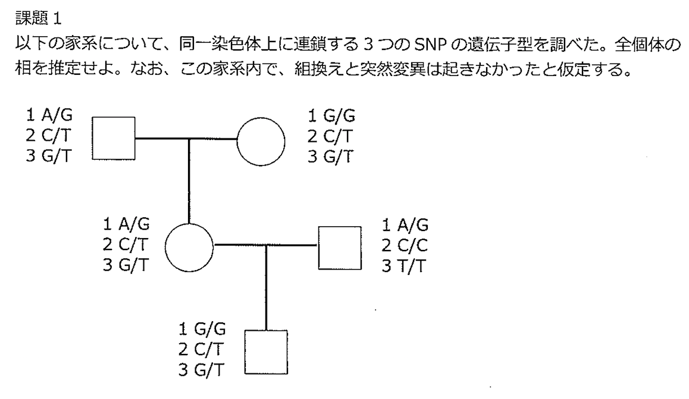</td>
<td>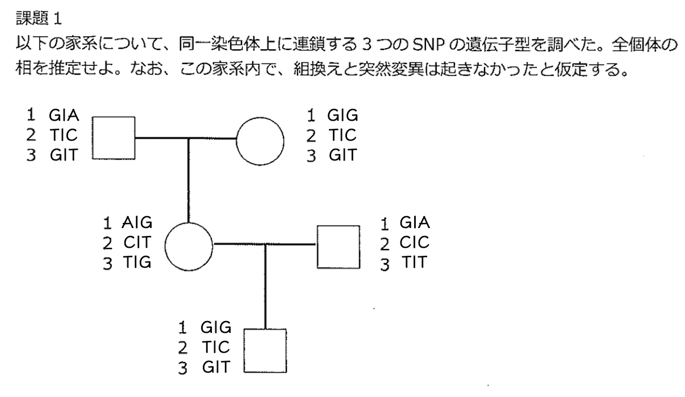</td>
</tr>
</tbody>
</table>
<h3>課題2</h3>
<p>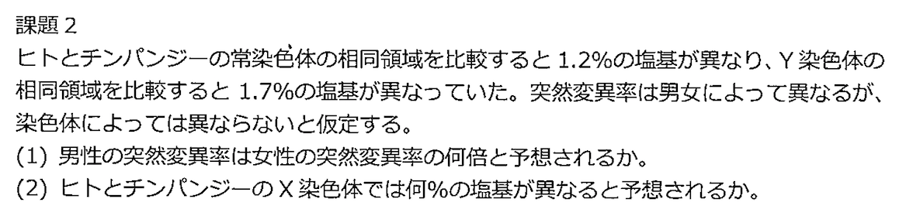</p>
<ul>
<li>常染色体、X染色体、Y染色体をA,X,Yと略記する。</li>
<li>
<p>男性の突然変異率が女性の突然変異率の <span class="math">\(a\)</span> 倍であるとする。（突然変異率は生殖細胞の分裂数に比例するので、<span class="math">\(a\)</span> = 「精子の分裂数/卵の分裂数」に等しい）</p>
</li>
<li>
<p>各染色体の突然変異率は以下のようにかける。
<div class="math">$$
\begin{cases}
  \begin{aligned}
    \mathrm{MA} &amp;= \mathrm{MA♂} + \mathrm{MA♀}\\
    &amp;\propto (1/2)\times a + (1/2)\times 1\\
    &amp;=(a+1)/2\\
    \mathrm{MX} &amp;= \mathrm{MX♂} + \mathrm{MX♀}\\
    &amp;\propto (1/3)\times a + (2/3)\times 1\\
    &amp;=(a+2)/3\\
    \mathrm{MY} &amp;= \mathrm{MY♂}\\
    &amp;\propto 1\times a\\
    &amp;=a\\
  \end{aligned}
\end{cases}
$$</div>
ここで、
<div class="math">$$\mathrm{MA}:\mathrm{MY} = \frac{a+1}{2}:a= 1.2:1.7$$</div>
より、<span class="math">\(a=\frac{17}{7}\)</span></p>
</li>
<li>
<p>
<div class="math">$$\mathrm{MX} = 1.7\times\frac{(a+2)/3}{a} = \frac{31}{30}$$</div>
</p>
</li>
</ul>
<h3>課題3</h3>
<p>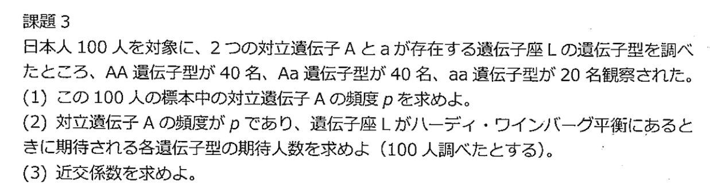</p>
<ol>
<li>
<div class="math">$$p=\frac{40\times2+40}{100\times2} = 0.6$$</div>
</li>
<li>対立遺伝子Aの頻度が <span class="math">\(p\)</span> の時、ハーディ・ワインバーグ平衡下の各遺伝子の期待人数は以下のようになる。<ul>
<li>AA：<span class="math">\(100p^2\)</span></li>
<li>Aa：<span class="math">\(100\times2p(1-p)\)</span></li>
<li>aa：<span class="math">\(100(1-p)^2\)</span></li>
</ul>
</li>
<li>標本中の対立遺伝子Aの頻度 <span class="math">\(p\)</span> が <span class="math">\(0.6\)</span> であることから計算した<b>対立遺伝子頻度に基づく遺伝子型頻度<font color="red">（期待頻度）</font></b>と、<b>観察された遺伝子型頻度<font color="red">（観察頻度）</font></b>の差を考えれば良い。</li>
</ol>
<table>
<thead>
<tr>
<th></th>
<th><span class="math">\(P\)</span></th>
<th><span class="math">\(Q\)</span></th>
<th><span class="math">\(R\)</span></th>
<th><span class="math">\(p\)</span></th>
<th><span class="math">\(q\)</span></th>
</tr>
</thead>
<tbody>
<tr>
<td></td>
<td><span class="math">\(40/100\)</span></td>
<td><span class="math">\(40/100\)</span></td>
<td><span class="math">\(20/100\)</span></td>
<td><span class="math">\(0.6\)</span></td>
<td><span class="math">\(1-p=0.4\)</span></td>
</tr>
</tbody>
</table>
<p>を用いて計算すれば、近交係数は</p>
<div class="math">$$F = \frac{2\left(\mathrm{P} + \frac{\mathrm{Q}}{2}\right)\left(\frac{\mathrm{Q}}{2}+\mathrm{R}\right) - \mathrm{Q}}{2\left(\mathrm{P} + \frac{\mathrm{Q}}{2}\right)\left(\frac{\mathrm{Q}}{2}+\mathrm{R}\right)}=\frac{2\mathrm{pq}-\mathrm{Q}}{2\mathrm{pq}}=\frac{1}{6}$$</div>
<h3>課題4</h3>
<p>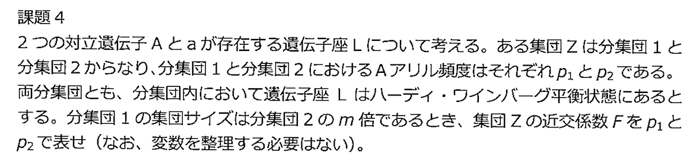</p>
<p>分集団2のサイズを <span class="math">\(N\)</span> とおくと、各頻度は以下のようにかける。</p>
<table>
<thead>
<tr>
<th></th>
<th>サイズ</th>
<th><span class="math">\(A\)</span></th>
<th><span class="math">\(a\)</span></th>
<th><span class="math">\(AA\)</span></th>
<th><span class="math">\(Aa\)</span></th>
<th><span class="math">\(aa\)</span></th>
</tr>
</thead>
<tbody>
<tr>
<td>分集団1</td>
<td><span class="math">\(mN\)</span></td>
<td><span class="math">\(p_1\)</span></td>
<td><span class="math">\(1-p_1\)</span></td>
<td><span class="math">\(p_1^2\)</span></td>
<td><span class="math">\(2p_1(1-p_1)\)</span></td>
<td><span class="math">\((1-p_1)^2\)</span></td>
</tr>
<tr>
<td>分集団2</td>
<td><span class="math">\(N\)</span></td>
<td><span class="math">\(p_2\)</span></td>
<td><span class="math">\(1-p_2\)</span></td>
<td><span class="math">\(p_2^2\)</span></td>
<td><span class="math">\(2p_2(1-p_2)\)</span></td>
<td><span class="math">\((1-p_2)^2\)</span></td>
</tr>
<tr>
<td>集団 <span class="math">\(Z\)</span></td>
<td><span class="math">\((m+1)N\)</span></td>
<td><span class="math">\(\frac{mp_1+p_2}{m+1}\)</span></td>
<td><span class="math">\(\frac{m(1-p_1)+(1-p_2)}{m+1}\)</span></td>
<td>略</td>
<td><span class="math">\(\frac{2mp_1(1-p_1) + 2p_2(1-p_2)}{m+1}\)</span></td>
<td>略</td>
</tr>
</tbody>
</table>
<p>したがって、</p>
<div class="math">$$\begin{aligned}F &amp;= \frac{2\left(\mathrm{P} + \frac{\mathrm{Q}}{2}\right)\left(\frac{\mathrm{Q}}{2}+\mathrm{R}\right) - \mathrm{Q}}{2\left(\mathrm{P} + \frac{\mathrm{Q}}{2}\right)\left(\frac{\mathrm{Q}}{2}+\mathrm{R}\right)}=\frac{2\mathrm{pq}-\mathrm{Q}}{2\mathrm{pq}}\\
&amp;=1-\frac{(m+1)\left\{mp_1(1-p_1)+p_2(1-p_2)\right\}}{(mp_1+p_2)\left\{(m(1-p_1) + (1-p_2))\right\}}\end{aligned}$$</div>
<p>なお、上記の式は <span class="math">\(m=0,m\rightarrow\infty\)</span><b>（分集団の片方のみ）</b>のどちらにおいても <span class="math">\(F=0\)</span><b>（ハーディ・ワインバーグ平衡状態にあるため、観察頻度と期待頻度に差がない）</b>となることが確かめられる。</p>
<h3>課題5</h3>
<p>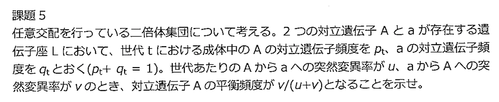</p>
<p>以下の漸化式を立てることができる。
</p>
<div class="math">$$
\begin{cases}
  p_{t+1} &amp;= (1-u)p_t + vq_t\\
  q_{t+1} &amp;= up_t + (1-v)q_t
\end{cases}
$$</div>
<p>したがって、</p>
<div class="math">$$
\begin{aligned}
p_{t+1} &amp;= (1-u)p_t + v(1-p_t)\\
&amp;= (1-u-v)p_t + v\\
\left(p_{t+1}-\frac{v}{u+v}\right)&amp;=(1-u-v)\left(p_{t}-\frac{v}{u+v}\right)\\
p_t &amp;= (1-u-v)^t\left(p_{0}-\frac{v}{u+v}\right) + \frac{v}{u+v}
\end{aligned}
$$</div>
<p>ここで、<span class="math">\(|1-u-v|&lt;1\)</span> なので、<span class="math">\(t\rightarrow\infty\)</span> で <span class="math">\(p_t\rightarrow\frac{v}{u+v}\)</span> となる。</p>
<h3>課題6</h3>
<p>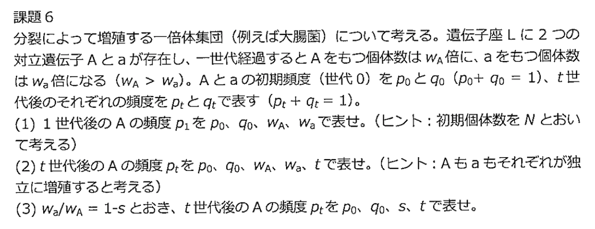</p>
<p>初期個体数を <span class="math">\(N\)</span> とおく。</p>
<table>
<thead>
<tr>
<th>世代</th>
<th>Aを持つ個体数</th>
<th>aを持つ個体数</th>
<th>全体の個体数</th>
</tr>
</thead>
<tbody>
<tr>
<td><span class="math">\(0\)</span></td>
<td><span class="math">\(Np_0\)</span></td>
<td><span class="math">\(Nq_o\)</span></td>
<td><span class="math">\(N\)</span></td>
</tr>
<tr>
<td><span class="math">\(1\)</span></td>
<td><span class="math">\(Nw_Ap_0\)</span></td>
<td><span class="math">\(Nw_aq_o\)</span></td>
<td><span class="math">\(Nw_Ap_0+Nw_aq_o\)</span></td>
</tr>
<tr>
<td><span class="math">\(\vdots\)</span></td>
<td></td>
<td></td>
<td></td>
</tr>
<tr>
<td><span class="math">\(t\)</span></td>
<td><span class="math">\(Nw_A^tp_0\)</span></td>
<td><span class="math">\(Nw_a^tq_o\)</span></td>
<td><span class="math">\(Nw_A^tp_0+Nw_a^tq_o\)</span></td>
</tr>
</tbody>
</table>
<ol>
<li>
<div class="math">$$p_1 = \frac{w_Ap_0}{w_Ap_0 + w_aq_o}$$</div>
</li>
<li>
<div class="math">$$p_t = \frac{w_A^tp_0}{w_A^tp_0 + w_a^tq_o}$$</div>
</li>
<li>
<div class="math">$$p_t = \frac{p_0}{p_0 + (1-s)^tq_0}$$</div>
</li>
</ol>
<p><b>※ なお、この時 <span class="math">\(p_{t+1} = \frac{p_t}{p_t + (1-s)q_t}\)</span> という漸化式が成り立っている。（課題7への伏線）</b></p>
<h3>課題7</h3>
<p>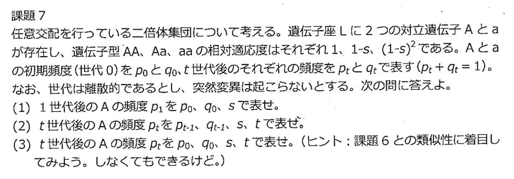</p>
<p><span class="math">\(t\)</span> 世代目の成体中（配偶子中）のAとaの頻度をそれぞれ <span class="math">\(p_t\)</span> と <span class="math">\(q_t\)</span> とする（<span class="math">\(p_t+q_t=1\)</span>）と、<span class="math">\(t+1\)</span> 世代目の子ども中のAA,Aa,aaの頻度は <span class="math">\(p_t^2,2p_tq_t,q_t^2\)</span> で表せる。</p>
<p>この時、これらの子供が成長して成体になると、適応度の影響を受けるので、相対頻度は <span class="math">\(p_t^2:2(1-s)p_tq_t:(1-s)^2q_t^2\)</span> となる。したがって、Aの頻度の漸化式は以下で表せる。</p>
<div class="math">$$
\begin{aligned}
p_{t+1} &amp;= \frac{p_t^2 + p_tq_t(1-s)}{p_t^2 + 2(1-s)p_tq_t + q_t^2(1-s)^2}\\
&amp;=\frac{p_t\left(p_t+q_t(1-s)\right)}{\left(p_t+(1-s)q_t\right)^2}\\
&amp;= \frac{p_t}{p_t+(1-s)q_t}\\
\therefore p_t&amp;= \frac{p_0}{p_0+(1-s)^tq_0}\quad\left(\because \text{課題6}\right)
\end{aligned}$$</div>
<h3>課題8</h3>
<p></p>
<p>世代 <span class="math">\(t\)</span> における対立遺伝子Aの頻度を <span class="math">\(p_t\)</span> とすると、平衡時には、以下の式が成り立つ。</p>
<div class="math">$$p_{t+1} = \frac{p_t^2(1-s_1) + p_tq_t}{p_t^2(1-s_1) + 2p_tq_t + q_t^2(1-s_2)} = p_t$$</div>
<p>したがって、これを解いて、</p>
<div class="math">$$
\begin{aligned}
(s_1+s_2)p_t^2 - (s_1+2s_2)p_t + s_2 &amp;= 0\\
\left((s_1+s_2)p_t - s_2\right) (p_t - 1)&amp;= 0\\
\therefore p_t &amp;= \frac{s_2}{s_1+s_2}, 1
\end{aligned}$$</div>
<h3>課題9</h3>
<p>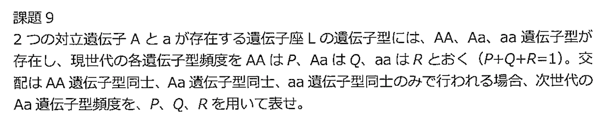</p>
<p>各遺伝子型で適応度に差がないとすると、以下の漸化式が成り立つ。</p>
<div class="math">$$
\begin{cases}
  \begin{aligned}
    P_{t+1} &amp;= P_t + \frac{1}{4}Q_t\\
    Q_{t+1} &amp;= \frac{1}{2}Q_t\\
    R_{t+1} &amp;= R_t + \frac{1}{4}Q_t
  \end{aligned}
\end{cases}
$$</div>
<p>したがって、<span class="math">\(Q/2\)</span></p>
<h3>課題10</h3>
<p>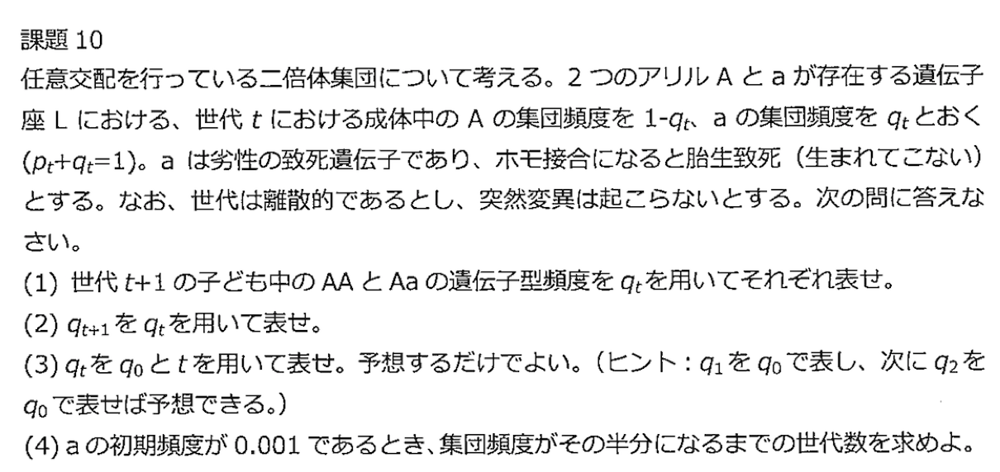</p>
<ol>
<li>世代 <span class="math">\(t+1\)</span> の子ども中のAAとAaの遺伝子型頻度は、それぞれ <span class="math">\((1-q_t)^2,2q_t(1-q_t)\)</span> とおける。</li>
<li>これらの子供が成長して大人になると、アリルaのホモ接合型が致死なので、
<div class="math">$$q_{t+1} = \frac{1}{2}\cdot\frac{2q_t(1-q_t)}{1-q_t^2} = \frac{q_t}{1+q_t}$$</div>
3.
<div class="math">$$
\begin{aligned}
q_1&amp;=\frac{q_0}{1+q_0}\\
q_2&amp;=\frac{q_1}{1+q_1} = \frac{\frac{q_0}{1+q_0}}{1+\frac{q_0}{1+q_0}}=\frac{q_0}{1+2q_0}\\
\vdots&amp;\\
q_t &amp;= \frac{q_0}{1+tq_0}
\end{aligned}$$</div>
</li>
<li><span class="math">\(\frac{1}{2}q_0=\frac{q_0}{1+tq_0}\)</span> となる <span class="math">\(t\)</span> と考えれば良いので、<span class="math">\(t = 1/0.001 = 1000\)</span> 世代。</li>
</ol>
<h3>課題11</h3>
<p>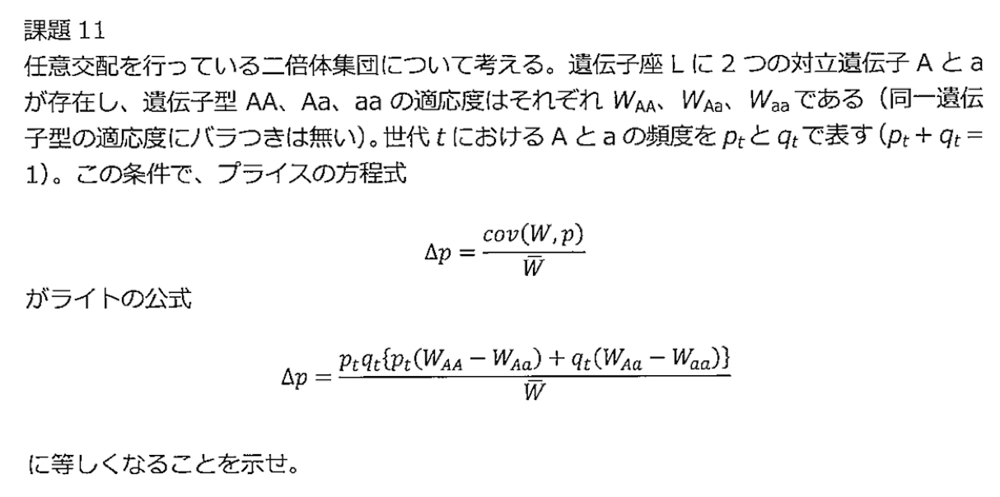</p>
<div class="math">$$
\begin{aligned}
cov(W,p)
&amp;= \frac{1}{n}\sum_{i=1}^n\left(W_i-\overline{W}\right)\left(p_i-\overline{p}\right)\\
&amp;= \frac{1}{n}\sum_{i=1}^n\left(W_i-\left(p_t^2W_{AA} + 2p_tq_tW_{Aa} + q_t^2W_{aa}\right)\right)\left(p_i-p_t\right)\\
&amp;= p_t^2\times\left\{\left(W_{AA}-\left(p_t^2W_{AA} + 2p_tq_tW_{Aa} + q_t^2W_{aa}\right)\right)\left(1-p_t\right)\right\}\\
&amp;\quad + 2p_tq_t\times\left\{\left(W_{Aa}-\left(p_t^2W_{AA} + 2p_tq_tW_{Aa} + q_t^2W_{aa}\right)\right)\left(\frac{1}{2}-p_t\right)\right\}\\
&amp;\quad+ q_t^2\times\left\{\left(W_{aa}-\left(p_t^2W_{AA} + 2p_tq_tW_{Aa} + q_t^2W_{aa}\right)\right)\left(0-p_t\right)\right\}\\
&amp;=p_t^2W_{AA}(1-p_t) + 2p_tq_tW_{Aa}\left(\frac{1}{2}-p_t\right) + q_t^2W_{aa}(-p_t)\\
&amp;\quad-\left(p_t^2W_{AA} + 2p_tq_tW_{Aa} + q_t^2W_{aa}\right)\left(p_t^2(1-p_t) + 2p_tq_t\left(\frac{1}{2}-p_t\right) + q_t^2(-p_t)\right)\\
&amp;= p_t^2W_{AA}q_t + p_tq_tW_{Aa}(q_t-p_t) -p_tq_t^2W_{aa}\\
&amp;\quad- \left(p_t^2W_{AA} + 2p_tq_tW_{Aa} + q_t^2W_{aa}\right)\left(p_t^2q_t + p_tq_t(q_t-p_t) - p_tq_t^2\right)\\
&amp;= p_tq_t\left(p_tW_{AA} + (q_t-p_t)W_{Aa} + q_tW_{aa}\right) - 0\\
&amp;= p_tq_t\left\{p_t\left(W_{AA} - W_{Aa}\right) + q_t\left(W_{Aa} - W_{aa}\right)\right\}
\end{aligned}
$$</div>
<h3>課題12</h3>
<p>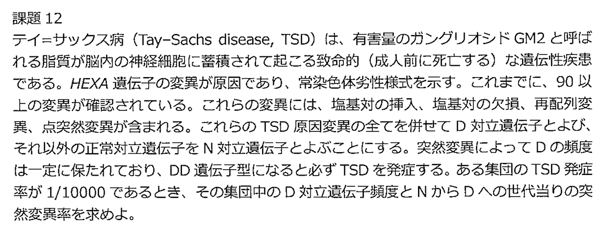</p>
<ul>
<li>世代 <span class="math">\(t\)</span> における<b>成体中の</b>正常アリルNの集団頻度を <span class="math">\(p_t\)</span>、アリルDの集団頻度を <span class="math">\(q_t\)</span> とおく。（<span class="math">\(p_t+q_t=1\)</span>）</li>
<li>NN,ND,DDの相対適応度は <span class="math">\(1,1,0\)</span></li>
<li>NからDへの突然変異率を <span class="math">\(u\)</span> とし、DからNへの復帰突然変異を無視する。</li>
</ul>
<p>すると、<span class="math">\(W=p_t^2 + 2p_tq_t\)</span> であり、Dの頻度に着目すると、</p>
<div class="math">$$q_{t+1}=p_tq_t/W = \frac{p_tq_t}{p_t^2 + 2p_tq_t} = \frac{q_t}{1+q_t}$$</div>
<p>となる。したがって、自然選択による変化量は、</p>
<div class="math">$$\Delta q_t = q_{t+1}-q_t = \frac{q_t}{1 + q_t} - q_t$$</div>
<p>ここに、突然変異による変化量を加えると、厳密な計算方法では無いが十分に近似できるので<b>（重ね合わせの原理）</b></p>
<div class="math">$$
\begin{aligned}
\Delta q_t = \left(\frac{q_t}{1 + q_t} - q_t\right) + u(1-q_t)
\end{aligned}
$$</div>
<p>平衡状態 <span class="math">\(q_t = q_{eq}\)</span> を考えると、この状態では <span class="math">\(D\)</span> の頻度は変化しない（<span class="math">\(\Delta q_t=0\)</span>）。したがって、</p>
<div class="math">$$u  = \frac{q_{eq}^2}{1-q_{eq}^2}$$</div>
<p>ここで、<span class="math">\(q_{eq}^2 = \frac{1}{10000}\)</span> であるから、</p>
<div class="math">$$u = \frac{1}{9999}$$</div>
<h3>課題13</h3>
<p>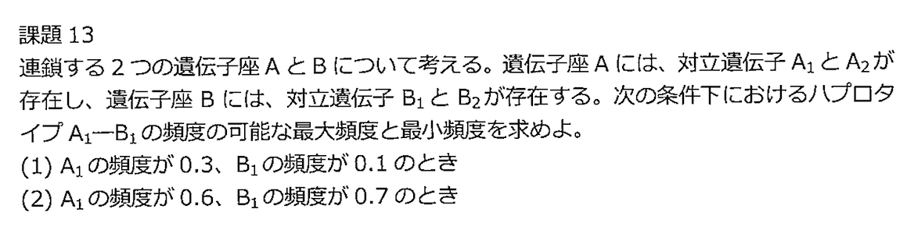</p>
<ol>
<li>最大頻度：<span class="math">\(0.1\)</span> 最小頻度：<span class="math">\(0\)</span></li>
<li>最大頻度：<span class="math">\(0.6\)</span> 最小頻度：<span class="math">\(0.6+0.7-1=0.3\)</span></li>
</ol>
<h3>課題14</h3>
<p>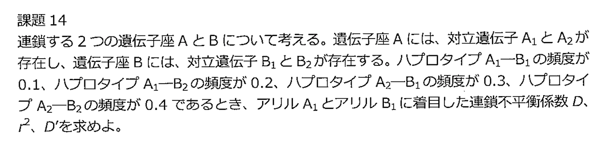</p>
<table>
<thead>
<tr>
<th align="center"></th>
<th align="center"><span class="math">\(A_1\)</span></th>
<th align="center"><span class="math">\(A_2\)</span></th>
<th align="center">Total</th>
</tr>
</thead>
<tbody>
<tr>
<td align="center"><span class="math">\(B_1\)</span></td>
<td align="center"><span class="math">\(x_{11} = p_1\cdot q_1 + D\)</span></td>
<td align="center"><span class="math">\(x_{21} = p_2\cdot q_1 + D\)</span></td>
<td align="center"><span class="math">\(q_1\)</span></td>
</tr>
<tr>
<td align="center"><span class="math">\(B_2\)</span></td>
<td align="center"><span class="math">\(x_{12} = p_1\cdot q_2 + D\)</span></td>
<td align="center"><span class="math">\(x_{22} = p_2\cdot q_2 + D\)</span></td>
<td align="center"><span class="math">\(q_2\)</span></td>
</tr>
<tr>
<td align="center">Total</td>
<td align="center"><span class="math">\(p_1\)</span></td>
<td align="center"><span class="math">\(p_2\)</span></td>
<td align="center"><span class="math">\(1\)</span></td>
</tr>
</tbody>
</table>
<p>ここで、</p>
<ul>
<li><span class="math">\(p_1=0.1+0.2=0.3\)</span></li>
<li><span class="math">\(p_2=0.3+0.4=0.7\)</span></li>
<li><span class="math">\(q_1=0.1+0.3=0.4\)</span></li>
<li><span class="math">\(q_2=0.2+0.4=0.6\)</span></li>
</ul>
<p>であり、</p>
<ul>
<li><span class="math">\(x_{11}=0.1\)</span></li>
<li><span class="math">\(x_{12}=0.2\)</span></li>
<li><span class="math">\(x_{21}=0.3\)</span></li>
<li><span class="math">\(x_{22}=0.4\)</span></li>
</ul>
<p>である。ゆえに、アリル <span class="math">\(A_1\)</span> とアリル <span class="math">\(B_1\)</span> に着目した連鎖不平衡係数 <span class="math">\(D\)</span> は、</p>
<div class="math">$$\begin{aligned}
D_{A_1B_1}
&amp;= x_{11} - p_1\times q_1 = 0.1-0.3\times0.4=-0.02\\
&amp;= x_{11}x_{22} - x_{12}x_{21} = 0.1\times0.4 - 0.2\times0.3 = -0.02
\end{aligned}$$</div>
<p>また、</p>
<div class="math">$$r^2 = \frac{D_{A_1B_1}}{p_1p_2q_1q_2} = \frac{0.02^2}{0.3\times0.7\times0.4\times0.6} = \frac{1}{126}$$</div>
<p>であり、</p>
<div class="math">$$
\begin{aligned}
D_{A_1B_1}' &amp;=
\begin{cases}
  D_{A_1B_1}/D_{A_1B_1\max} &amp;= D_{A_1B_1}/\left\{\min(p_1,q_1)-p_1q_1\right\}&amp; (D_{A_1B_1}&gt;0)\\
  -D_{A_1B_1}/D_{A_1B_1\min} &amp;= D_{A_1B_1}/\left\{\max(p_1+q_1-1,0)-p_1q_1\right\} &amp; (D_{A_1B_1}&lt;0)\\
\end{cases}\\
&amp;=D_{A_1B_1}/\left(0-0.3\times0.4\right)\\
&amp;= \frac{1}{6}
\end{aligned}$$</div>
<h3>課題15</h3>
<p>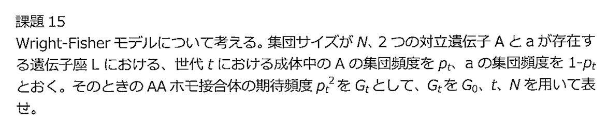</p>
<p><b><font color="red">Wright-Fisherモデル</font></b>は以下のようなモデルである。</p>
<ul>
<li><b>世代は離散的（全固体が入れ替わる）</b></li>
<li>任意婚</li>
<li>親世代の各個体が、次世代の任意の子供の親である確率は等しい（<span class="math">\(1/N\)</span>）</li>
</ul>
<p>ここで、</p>
<div class="math">$$
\begin{aligned}
\mathrm{E}[i]
&amp;= \sum_{i=0}^{2N}\left[i{{2N}\choose{i}} p^i(1-p)^{2N-i}\right]\\
&amp;= 2Np\sum_{i=0}^{2N-1}\left[{{2N-1}\choose{i}} p^i(1-p)^{(2N-1)-i}\right]\\
&amp;= 2Np \left[p + (1-p)\right]^{2N-1} = 2Np\\
\mathrm{E}[i(i-1)]
&amp;= \sum_{i=0}^{2N}\left[i(i-1){{2N}\choose{i}} p^i(1-p)^{2N-i}\right]\\
&amp;= 2Np\sum_{i=0}^{2N-1}\left[(i-1){{2N-1}\choose{i}} p^i(1-p)^{(2N-1)-i}\right]\\
&amp;= 2N(2N-1)p^2\sum_{i=0}^{2N-2}\left[{{2N-2}\choose{i}} p^i(1-p)^{(2N-2)-i}\right]\\
&amp;= 2N(2N-1)p^2\left[p + (1-p)\right]^{2N-2} = 2N(2N-1)p^2\\
\mathrm{E}[i^2]
&amp;= \mathrm{E}[i(i-1) + i]\\
&amp;= 2N(2N-1)p^2 + 2Np = 2Np\left\{1+(2N-1)p\right\}\\
\end{aligned}
$$</div>
<p>より、</p>
<div class="math">$$\mathrm{E}[i^2] = 2Np\left\{1+(2N-1)p\right\}$$</div>
<p>であることを用いれば、世代 <span class="math">\(t\)</span> におけるAアリルの個数を <span class="math">\(i\)</span> とすると、次世代（<span class="math">\(t+1\)</span>）のAAホモ接合体の期待頻度は、</p>
<div class="math">$$
\begin{aligned}
\mathrm{E}[G_{t+1}] &amp;= \mathrm{E}[p_i^2] = \mathrm{E}[(i/2N)^2] = \frac{\mathrm{E}[i^2]}{(2N)^2}\\
&amp;=\frac{2Np_t\left\{1+(2N-1)p_t\right\}}{(2N)^2}\\
&amp;=p_t^2 + \frac{2p_t(1-p_t)}{4N}\\
&amp;=G_t + \frac{H_t}{4N}
\end{aligned}
$$</div>
<p>なお、<b>ここで <span class="math">\(H_t\)</span> は、ヘテロ接合体の期待頻度を表す。</b></p>
<p>また、次世代の <span class="math">\(H\)</span> の期待値 <span class="math">\(H_{t+1}\)</span> は、</p>
<div class="math">$$
\begin{aligned}
H_{t+1}=\mathrm{E}[H_{t+1}]
&amp;= \mathrm{E}[2p_t(1-p_t)]\\
&amp;= \mathrm{E}\left[2\times \frac{i}{2N} \times \frac{2N-i}{2N}\right]\\
&amp;= \frac{2\mathrm{E}[i]}{2N} - \frac{2\mathrm{E}[i^2]}{(2N)^2}\\
&amp;= 2p - \frac{4Np\{1+(2N-1)p\}}{(2N)^2}\\
&amp;= 2p_t(1-p_t)\left(1-\frac{1}{2N}\right)\\
&amp;= H_t\left(1-\frac{1}{2N}\right)
\end{aligned}
$$</div>
<p>となるから、<span class="math">\(\mathrm{E}[H_t] = H_0(1-1/2N)^t\)</span> となる。ここで、先ほどの <span class="math">\(\mathrm{E}[G]\)</span> の式を再帰的に呼び出すと、</p>
<div class="math">$$
\begin{aligned}
G_{t} =\mathrm{E}[G_{t}] &amp;=G_{t-1} + \frac{H_{t-1}}{4N}\\
&amp;= \left(G_{t-2} + \frac{H_{t-2}}{4N}\right) + \frac{H_{t-1}}{4N}\\
&amp;=\cdots\\
&amp;=G_0 + \frac{1}{4N}\left(H_0+\cdots+H_{t-1}\right)\\
&amp;=G_0 + \frac{1}{4N}\cdot H_0\left\{1+\cdots+\left(1-\frac{1}{2N}\right)^{t-1}\right\}\\
&amp;=G_0 + \frac{1}{4N}\cdot H_0\cdot2N\left\{1-\left(1-\frac{1}{2N}\right)^t\right\}\\
&amp;=G_0 + \frac{H_0}{2}\left\{1-\left(1-\frac{1}{2N}\right)^t\right\}
\end{aligned}
$$</div>
<p>また、<span class="math">\(G_0=p_0^2\)</span> より、
</p>
<div class="math">$$2p_0(1-p_0) = 2\sqrt{G_0}\left(1-\sqrt{G_0}\right)$$</div>
<p>したがって、
</p>
<div class="math">$$G_t = G_0 + \sqrt{G_0}\left(1-\sqrt{G_0}\right)\left(1-\left(1-\frac{1}{2N}\right)^t\right)$$</div>
<h3>課題16</h3>
<p>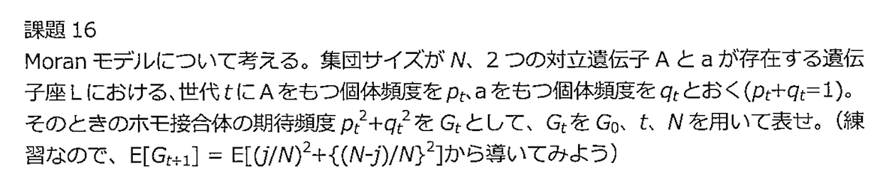</p>
<p><b><font color="red">Moranモデル</font></b>は以下のようなモデルである。</p>
<ul>
<li>個体数 <span class="math">\(N\)</span> の一倍体の生物</li>
<li>単位時間あたり、無作為に選ばれた1個体が子供を産み、無作為に選ばれた1個体が死亡する。（同一個体が子供を残し死亡することもある）</li>
<li>Aアリルを持つ個体数が <span class="math">\(i\)</span>、aアリルを持つ個体数が <span class="math">\(N-i\)</span></li>
</ul>
<p>したがって、<span class="math">\(p=i/N\)</span> として、単位時間経過後に <span class="math">\(i\)</span> が <span class="math">\(j\)</span> になる確率 <span class="math">\(P_{ij}\)</span> は、以下のように表される。</p>
<div class="math">$$P_{ij} =
\begin{cases}
  p(1-p), &amp; \text{if}\ j=i+1 \\
  (1-p)p, &amp; \text{if}\ j=i-1 \\
  p^2 + (1-p)^2, &amp; \text{if}\ j=i \\
\end{cases}
$$</div>
<p>よって、現在のAアリルを持つ個体数が <span class="math">\(i(=Np)\)</span> のとき、1単位時間経過後のAアリルを持つ個体数 <span class="math">\(j\)</span> の期待値 <span class="math">\(\mathrm{E}[j]\)</span> と分散 <span class="math">\(\mathrm{V}[j]\)</span> は、</p>
<div class="math">$$
\begin{aligned}
\mathrm{E}[j]
&amp;= (Np+1)p(1-p) + (Np-1)(1-p)p + Np\left(p^2 + (1-p)^2\right)\\
&amp;= Np = i\\
\mathrm{V}[j]
&amp;= (Np+1-\mathrm{E}[j])^2p(1-p) + (Np-1-\mathrm{E}[j])^2(1-p)p\\
&amp;+ (Np-\mathrm{E}[j])^2\left(p^2 + (1-p)^2\right) = 2p(1-p)\\
&amp;= 2(i/N)(1-i/N)\\
\mathrm{E}[j^2]
&amp;= \mathrm{V}[j] + \mathrm{E}[j]^2 = 2p(1-p) + N^2p^2\\
&amp;= 2\left(\frac{i}{N}\right)\left(1-\frac{i}{N}\right) + i^2
\end{aligned}
$$</div>
<p>課題15と同様に考えると、</p>
<div class="math">$$
\begin{aligned}
\mathrm{G_{t+1}}
&amp;= \mathrm{E}\left[\left(\frac{j}{N}\right)^2 + \left(\frac{N-j}{N}\right)^2\right]\\
&amp;= \frac{1}{N^2}\mathrm{E}\left[2j^2 - 2Nj + N^2\right]\\
&amp;= \frac{1}{N^2}\left\{2\left(2p_t(1-p_t) + N^2p_t^2\right) - 2N^2p_t + N^2\right\}\\
&amp;= \frac{2}{N^2}2p_t(1-p_t) + \left(2p_t^2 + 2p_t + 1\right)\\
&amp;= \frac{2}{N^2}H_t + G_t
\end{aligned}
$$</div>
<p>なお、<b>ここで <span class="math">\(H_t\)</span> は、ヘテロ接合体の期待頻度を表す。</b></p>
<p>また、次世代の <span class="math">\(H\)</span> の期待値 <span class="math">\(H_{t+1}\)</span> は、</p>
<div class="math">$$
\begin{aligned}
\mathrm{E}[H_{t+1}]
&amp;= \mathrm{E}[2\times \frac{j}{N}\times \frac{N-j}{N}\\
&amp;= 2\frac{\mathrm{E}[j]}{N}-2\frac{\mathrm{E}[j^2]}{N^2}\\
&amp;= 2p - \left\{\frac{4p(1-p)}{N^2} + 2p^2\right\}\\
&amp;= 2p_t(1-p_t)\left(1-\frac{2}{N^2}\right)\\
&amp;= H_t\left(1-\frac{2}{N^2}\right)
\end{aligned}
$$</div>
<p>となるから、<span class="math">\(\mathrm{E}[H_t] = H_0(1-1/2N^2)^t\)</span> となる。ここで、先ほどの <span class="math">\(\mathrm{E}[G]\)</span> の式を再帰的に呼び出すと、</p>
<div class="math">$$
\begin{aligned}
G_{t} =\mathrm{E}[G_{t}] &amp;=G_{t-1} + \frac{2}{N^2}H_{t-1}\\
&amp;= \left(G_{t-2} + \frac{2}{N^2}H_{t-2}\right) + \frac{2}{N^2}H_{t-1}\\
&amp;=\cdots\\
&amp;=G_0 + \frac{2}{N^2}\left(H_0+\cdots+H_{t-1}\right)\\
&amp;=G_0 + \frac{2}{N^2}\cdot H_0\left\{1+\cdots+\left(1-\frac{1}{2N^2}\right)^{t+1}\right\}\\
&amp;=G_0 + \frac{2}{N^2}\cdot H_0\cdot 2N^2\left\{1-\left(1-\frac{1}{2N^2}\right)^t\right\}\\
&amp;=G_0 + 4H_0\left\{1-\left(1-\frac{1}{2N}\right)^t\right\}
\end{aligned}
$$</div>
<p>また、<span class="math">\(H_0= 1-G_0\)</span> であるから、</p>
<div class="math">$$G_t = G_0 + 4(1-G_0)\left\{1-\left(1-\frac{1}{2N}\right)^t\right\}$$</div>
<h3>課題17</h3>
<p>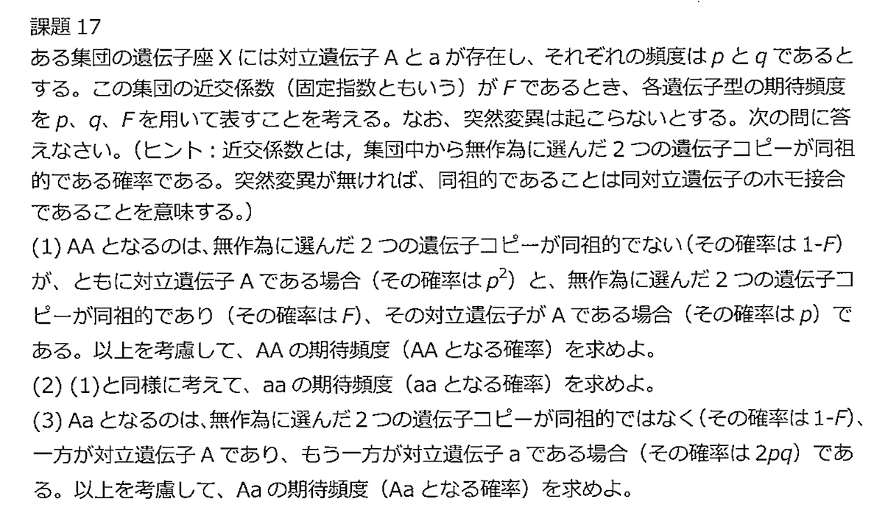</p>
<ol>
<li>
<div class="math">$$P = (1-F)\cdot p^2 + F\cdot p$$</div>
</li>
<li>
<div class="math">$$R = (1-F)\cdot q^2 + F\cdot q$$</div>
</li>
<li>
<div class="math">$$Q = (1-F)\cdot 2pq$$</div>
</li>
</ol>
<h3>課題18</h3>
<p>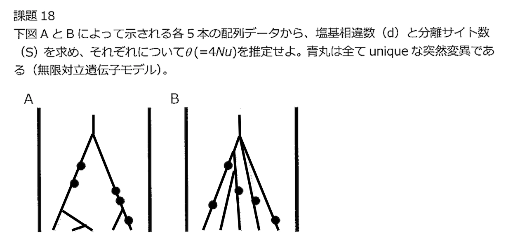</p>
<p>それぞれ左から配列 <span class="math">\(1\sim5\)</span> と番号をつける。また、以下の関係を使う。</p>
<div class="math">$$\begin{aligned}
\mathrm{E}[S] &amp;= \theta\sum_{i=1}^{n-1}\frac{1}{i},\quad  \mathrm{E}[d] = \theta
\end{aligned}$$</div>
<h4>A：<span class="math">\(S=5\)</span></h4>
<table>
<thead>
<tr>
<th></th>
<th>site1</th>
<th>site2</th>
<th>site3</th>
<th>site4</th>
<th>site5</th>
</tr>
</thead>
<tbody>
<tr>
<td>1</td>
<td>●</td>
<td>●</td>
<td></td>
<td></td>
<td></td>
</tr>
<tr>
<td>2</td>
<td>●</td>
<td>●</td>
<td></td>
<td></td>
<td></td>
</tr>
<tr>
<td>3</td>
<td>●</td>
<td>●</td>
<td></td>
<td></td>
<td></td>
</tr>
<tr>
<td>4</td>
<td></td>
<td></td>
<td>●</td>
<td>●</td>
<td></td>
</tr>
<tr>
<td>5</td>
<td></td>
<td></td>
<td>●</td>
<td>●</td>
<td>●</td>
</tr>
</tbody>
</table>
<div class="math">$$d = \frac{3\times2 + 3\times2 + 3\times 2+3\times 2 + 4\times 1}{_5\mathrm{C}_2} = \frac{14}{5}$$</div>
<p>よって、</p>
<div class="math">$$\theta =
\begin{cases}
  \begin{aligned}
    &amp;5\times\frac{12}{25} = \frac{12}{5} &amp; \left(\text{by } S\right)\\
    &amp;\frac{14}{5} &amp; \left(\text{by } d\right)
  \end{aligned}
\end{cases}
$$</div>
<h4>B：<span class="math">\(S=5\)</span></h4>
<table>
<thead>
<tr>
<th></th>
<th>site1</th>
<th>site2</th>
<th>site3</th>
<th>site4</th>
<th>site5</th>
</tr>
</thead>
<tbody>
<tr>
<td>1</td>
<td>●</td>
<td></td>
<td></td>
<td>●</td>
<td></td>
</tr>
<tr>
<td>2</td>
<td></td>
<td></td>
<td></td>
<td></td>
<td></td>
</tr>
<tr>
<td>3</td>
<td></td>
<td>●</td>
<td></td>
<td></td>
<td></td>
</tr>
<tr>
<td>4</td>
<td></td>
<td></td>
<td>●</td>
<td></td>
<td></td>
</tr>
<tr>
<td>5</td>
<td></td>
<td></td>
<td></td>
<td></td>
<td>●</td>
</tr>
</tbody>
</table>
<div class="math">$$d = \frac{1\times4 + 1\times4 + 1\times4 + 1\times 4 + 1\times 4}{_5\mathrm{C}_2} = \frac{20}{10} = 2$$</div>
<p>よって、</p>
<div class="math">$$\theta =
\begin{cases}
  \begin{aligned}
    &amp;5\times\frac{12}{25} = \frac{12}{5} &amp; \left(\text{by } S\right)\\
    &amp;2 &amp; \left(\text{by } d\right)
  \end{aligned}
\end{cases}
$$</div>
<h3>課題19</h3>
<p>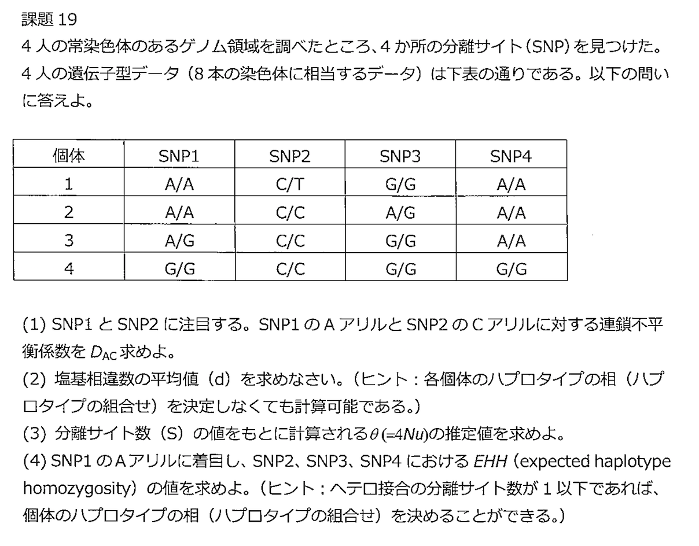</p>
<table>
<thead>
<tr>
<th align="center"></th>
<th align="center"><span class="math">\(\mathrm{A}\)</span></th>
<th align="center"><span class="math">\(\mathrm{G}\)</span></th>
<th align="center">Total</th>
</tr>
</thead>
<tbody>
<tr>
<td align="center"><span class="math">\(\mathrm{C}\)</span></td>
<td align="center"><span class="math">\(1/2\)</span></td>
<td align="center"><span class="math">\(3/8\)</span></td>
<td align="center"><span class="math">\(7/8\)</span></td>
</tr>
<tr>
<td align="center"><span class="math">\(\mathrm{T}\)</span></td>
<td align="center"><span class="math">\(1/8\)</span></td>
<td align="center"><span class="math">\(0\)</span></td>
<td align="center"><span class="math">\(1/8\)</span></td>
</tr>
<tr>
<td align="center">Total</td>
<td align="center"><span class="math">\(5/8\)</span></td>
<td align="center"><span class="math">\(3/8\)</span></td>
<td align="center"><span class="math">\(1\)</span></td>
</tr>
</tbody>
</table>
<ol>
<li>
<div class="math">$$D_{AC} = \frac{1}{2} - \frac{5}{8}\cdot\frac{7}{8} = -\frac{3}{64}$$</div>
</li>
<li>
<div class="math">$$d = \frac{5\times3 + 7\times1 + 7\times 1+6\times 2}{_8\mathrm{C}_2} = \frac{41}{28}$$</div>
</li>
<li>
<div class="math">$$\theta = \frac{4}{\sum_{i=1}^{4-1}\frac{1}{i}} = \frac{24}{11}$$</div>
</li>
<li>EHHは、以下の式によって求められる。
<div class="math">$$\mathrm{EHH}_i = \frac{\sum_{j=1}^s\binom{e_{ij}}{2}}{\binom{c_i}{2}},\quad c_i=\sum_{j=1}^se_{ij}$$</div>
</li>
</ol>
<p>なお、それぞれの記号は以下を意味する。</p>
<ul>
<li><span class="math">\(c_i\)</span>：アリル <span class="math">\(i\)</span> を含むハプロタイプ数</li>
<li><span class="math">\(e_{ij}\)</span>：アリル <span class="math">\(i\)</span> を含むハプロタイプのうち <span class="math">\(j\)</span> 番目のハプロタイプ数</li>
<li><span class="math">\(s\)</span>：アリル <span class="math">\(i\)</span> を含む異なるハプロタイプの総数</li>
</ul>
<p>よって、ここでSNP1のAアリルに着目すれば、以下のように <span class="math">\(\mathrm{EHH}\)</span> が求められる。（SNP1のAアリルに着目しているので、SNP1がGアリルのものは考えなくて良い。）</p>
<table>
<thead>
<tr>
<th></th>
<th>SNP1</th>
<th>SNP2</th>
<th>SNP3</th>
<th>SNP4</th>
</tr>
</thead>
<tbody>
<tr>
<td>s</td>
<td>1</td>
<td>2</td>
<td>3</td>
<td>3</td>
</tr>
<tr>
<td>1a</td>
<td>A</td>
<td>C</td>
<td>G</td>
<td>A</td>
</tr>
<tr>
<td>1b</td>
<td>A</td>
<td>T</td>
<td>G</td>
<td>A</td>
</tr>
<tr>
<td>2a</td>
<td>A</td>
<td>C</td>
<td>A</td>
<td>A</td>
</tr>
<tr>
<td>2b</td>
<td>A</td>
<td>C</td>
<td>G</td>
<td>A</td>
</tr>
<tr>
<td>3a</td>
<td>A</td>
<td>C</td>
<td>G</td>
<td>A</td>
</tr>
<tr>
<td><span class="math">\(\mathrm{EHH}_A\)</span></td>
<td>-</td>
<td>6/10</td>
<td>3/10</td>
<td>3/10</td>
</tr>
</tbody>
</table>
<div class="math">$$
\begin{aligned}
\mathrm{EHH}_{A,\mathrm{SNP}2}
&amp;= \frac{\binom{1}{2} + \binom{4}{2}}{\binom{5}{2}}
&amp;= \frac{6}{10}\\
\mathrm{EHH}_{A,\mathrm{SNP}3}
&amp;= \frac{\binom{1}{2} + \binom{3}{2} + \binom{1}{2}}{{\binom{5}{2}}} &amp;=\frac{3}{10} \\
\mathrm{EHH}_{A,\mathrm{SNP}4}
&amp;= \frac{\binom{1}{2} + \binom{3}{2} + \binom{1}{2}}{{\binom{5}{2}}} &amp;=\frac{3}{10} \\
\end{aligned}
$$</div>
<h3>課題20</h3>
<p>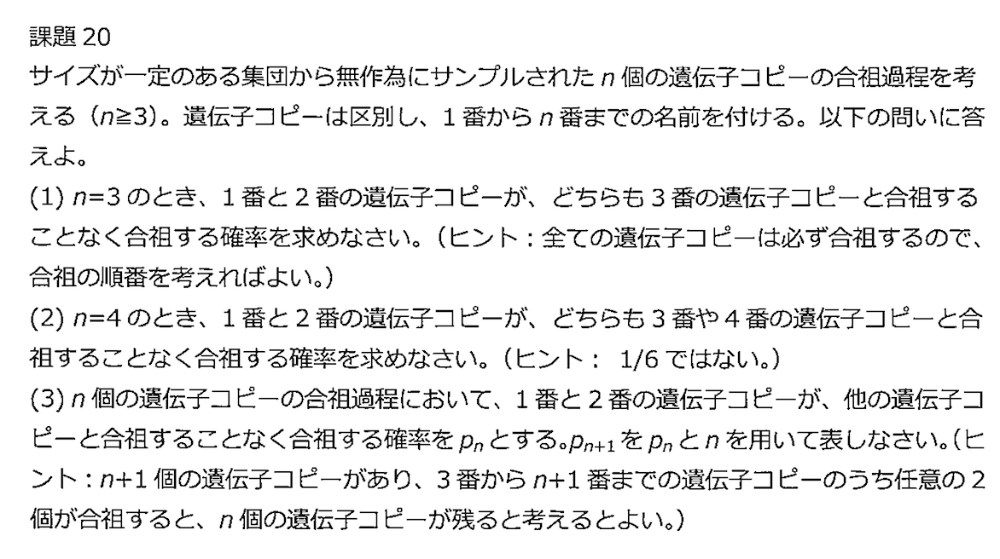</p>
<ol>
<li>
<div class="math">$$\frac{1}{_3\mathrm{C}_2} = \frac{1}{3}$$</div>
</li>
<li>
<div class="math">$$\frac{1}{_4\mathrm{C}_2} + \frac{1}{_4\mathrm{C}_2}\cdot\frac{1}{_3\mathrm{C}_2} = \frac{2}{9}$$</div>
</li>
<li>
<div class="math">$$p_{n+1} = \frac{_{n-1}\mathrm{C}_2}{_{n+1}\mathrm{C}_2}\cdot p_n + \frac{1}{_{n+1}\mathrm{C}_2}$$</div>
</li>
</ol>
<script type="text/javascript">if (!document.getElementById('mathjaxscript_pelican_#%@#$@#')) {
    var align = "center",
        indent = "0em",
        linebreak = "false";

    if (false) {
        align = (screen.width < 768) ? "left" : align;
        indent = (screen.width < 768) ? "0em" : indent;
        linebreak = (screen.width < 768) ? 'true' : linebreak;
    }

    var mathjaxscript = document.createElement('script');
    mathjaxscript.id = 'mathjaxscript_pelican_#%@#$@#';
    mathjaxscript.type = 'text/javascript';
    mathjaxscript.src = 'https://cdnjs.cloudflare.com/ajax/libs/mathjax/2.7.3/latest.js?config=TeX-AMS-MML_HTMLorMML';

    var configscript = document.createElement('script');
    configscript.type = 'text/x-mathjax-config';
    configscript[(window.opera ? "innerHTML" : "text")] =
        "MathJax.Hub.Config({" +
        "    config: ['MMLorHTML.js']," +
        "    TeX: { extensions: ['AMSmath.js','AMSsymbols.js','noErrors.js','noUndefined.js'], equationNumbers: { autoNumber: 'none' } }," +
        "    jax: ['input/TeX','input/MathML','output/HTML-CSS']," +
        "    extensions: ['tex2jax.js','mml2jax.js','MathMenu.js','MathZoom.js']," +
        "    displayAlign: '"+ align +"'," +
        "    displayIndent: '"+ indent +"'," +
        "    showMathMenu: true," +
        "    messageStyle: 'normal'," +
        "    tex2jax: { " +
        "        inlineMath: [ ['\\\\(','\\\\)'] ], " +
        "        displayMath: [ ['$$','$$'] ]," +
        "        processEscapes: true," +
        "        preview: 'TeX'," +
        "    }, " +
        "    'HTML-CSS': { " +
        "        fonts: [['STIX', 'TeX']]," +
        "        styles: { '.MathJax_Display, .MathJax .mo, .MathJax .mi, .MathJax .mn': {color: 'inherit ! important'} }," +
        "        linebreaks: { automatic: "+ linebreak +", width: '90% container' }," +
        "    }, " +
        "}); " +
        "if ('default' !== 'default') {" +
            "MathJax.Hub.Register.StartupHook('HTML-CSS Jax Ready',function () {" +
                "var VARIANT = MathJax.OutputJax['HTML-CSS'].FONTDATA.VARIANT;" +
                "VARIANT['normal'].fonts.unshift('MathJax_default');" +
                "VARIANT['bold'].fonts.unshift('MathJax_default-bold');" +
                "VARIANT['italic'].fonts.unshift('MathJax_default-italic');" +
                "VARIANT['-tex-mathit'].fonts.unshift('MathJax_default-italic');" +
            "});" +
            "MathJax.Hub.Register.StartupHook('SVG Jax Ready',function () {" +
                "var VARIANT = MathJax.OutputJax.SVG.FONTDATA.VARIANT;" +
                "VARIANT['normal'].fonts.unshift('MathJax_default');" +
                "VARIANT['bold'].fonts.unshift('MathJax_default-bold');" +
                "VARIANT['italic'].fonts.unshift('MathJax_default-italic');" +
                "VARIANT['-tex-mathit'].fonts.unshift('MathJax_default-italic');" +
            "});" +
        "}";

    (document.body || document.getElementsByTagName('head')[0]).appendChild(configscript);
    (document.body || document.getElementsByTagName('head')[0]).appendChild(mathjaxscript);
}
</script>
            <div>
</div>

            
            
            <hr/>
        </div>
        <section>
        <div class="span2" style="float:right;font-size:0.9em;">
            <h5>Published</h5>
            <time itemprop="dateCreated" datetime="2019-07-17T00:00:00+09:00"> 7 17, 2019</time>

<h5>Last Updated</h5>
<time datetime="2019-07-17T00:00:00+09:00"> 7 17, 2019</time>

            <h5>Category</h5>
            <a class="category-link" href="https://iwasakishuto.github.io/study/notes/categories.html#fen-zi-jin-hua-xue-ref">分子進化学</a>
            <h5>Tags</h5>
            <ul class="list-of-tags tags-in-article">
                <li><a href="https://iwasakishuto.github.io/study/notes/tags#3s-ref">3S
                    <span>69</span>
</a></li>
                <li><a href="https://iwasakishuto.github.io/study/notes/tags#fen-zi-jin-hua-xue-ref">分子進化学
                    <span>13</span>
</a></li>
            </ul>
<h5>Contact</h5>
    <a href="https://twitter.com/cabernet_rock" title="My twitter Profile" class="sidebar-social-links" target="_blank">
    <i class="fa fa-twitter sidebar-social-links"></i></a>
    <a href="https://github.com/iwasakishuto" title="My github Profile" class="sidebar-social-links" target="_blank">
    <i class="fa fa-github sidebar-social-links"></i></a>
    <a href="https://www.facebook.com/iwasakishuto" title="My facebook Profile" class="sidebar-social-links" target="_blank">
    <i class="fa fa-facebook sidebar-social-links"></i></a>
        </div>
        </section>
</div>
</article>
                </div>
                <div class="span1"></div>
            </div>
        </div>
        <div id="push"></div>
    </div>
<footer>
<div id="footer">
    <ul class="footer-content">
        <li class="elegant-power">Powered by <a href="http://getpelican.com/" title="Pelican Home Page">Pelican</a>. Theme: <a href="https://github.com/Pelican-Elegant/elegant/" title="Theme Elegant Home Page">Elegant</a></li>
    </ul>
</div>
</footer>            <script src="//code.jquery.com/jquery.min.js"></script>
        <script src="//netdna.bootstrapcdn.com/twitter-bootstrap/2.3.2/js/bootstrap.min.js"></script>
        <script>
            function validateForm(query)
            {
                return (query.length > 0);
            }
        </script>
        <script src="https://iwasakishuto.github.io/js/smooth-scroll.polyfills.min.js"></script>

    
        <link rel="stylesheet" type="text/css" href="https://iwasakishuto.github.io/study/notes/theme/css/custom.css" media="screen">
    </body>
    <!-- Theme: Elegant built for Pelican
    License : MIT -->
</html>